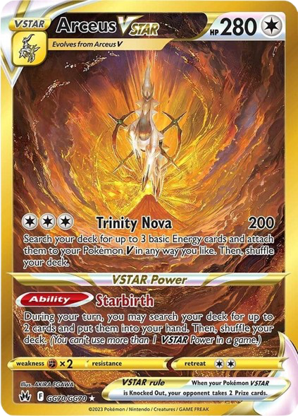

Pokémon kaarten

Ik vind het leuk om Pokémon kaarten te verzamelen door de unieke illustraties, het ruilen met andere mensen, de nostalgie die de kaarten met zich meebrengen en de verhalen die achter sommige kaarten zitten. Iedere kaart is uniek :D




Hoofdstuk 3
Nog een alinea...